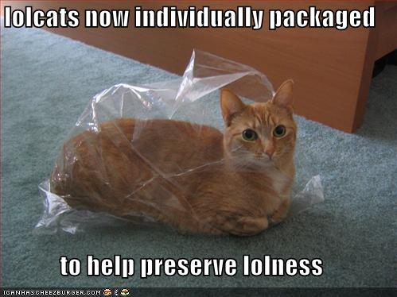

Proposer un talk en moins de 2h
Pour beaucoup, le temps disponible est la principale raison de ne pas céder aux multiples sollicitations de Mainelabs. Entre retour d'expérience et proof of concept, voyons comment proposer un talk en moins de 2h sans (trop) passer pour une buse.
Pourquoi ce talk ?
- Retour d'expérience sur des précédents talks
- Réflexion sur l'optimisation de process
- Prétexte idéal pour s'y prendre au dernier moment
Le constat
- Premier Talk sur la SPL : environ 10h de préparation
- Second Talk sur la qualité logicielle : environ 3h de préparation
- Talk SUPINFO sur les métiers de l'informatique (45 minutes) : environ 3h45 de préparation
Bilan de la préparation de ce talk
- Préparation du plan : 22 minutes
- Préparation des slides : 66 minutes
- Divers : une trentaine de minutes
- Répétition : 8 minutes
- Café ingéré : environ 2L
- TOTAL : environ 2h10, et environ 2L
Comment aller vite ?
- Fixer le temps à passer dés le départ
- Parler d'un sujet connu, et maîtrisé
- Passer peu de temps ne veut pas dire ne pas se préparer à l'avance
- Prioriser les idées
- Focus, focus, focus
Le choix du sujet
- Ce qui parait évident pour soi est souvent mal connu des autres
- Pas la peine d'aller au bout du sujet, introduisez des concepts
- Faire du story-telling : plus intéressant, moins de préparation
Les slides
- Préparer le plan avant de faire les slides
- Relire et affiner le plan
- Choisir un outil simple pour les slides
- Choisir un thème simple et efficace
- Ajouter quelques visuels
- Adapter le thème si on a le temps
- Mettre au moins un lolcat 
Répéter le texte
- Chaque répétition dure dans les 10 minutes
- Pas besoin de plus de 2 ou 3 répétitions
- Inutile de chercher à connaître vos slides parfaitement
Optimiser
- Conserver vos thèmes personnalisés pour les prochains slides
- Prenez des retours : trop compliqué, trop simpliste ?
- Préparation : étais-je à l'aise ou complètement largué ?
- Ne pas optimiser au delà du raisonnable
- Conserver la même page de conclusion
Merci !
Des questions ?